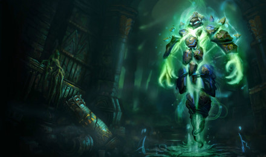
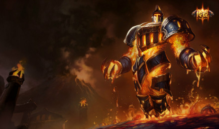
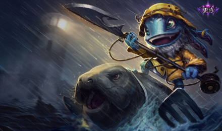
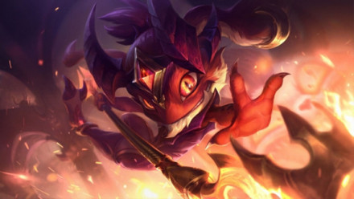
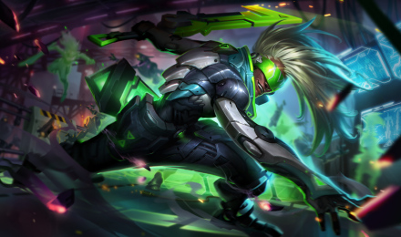
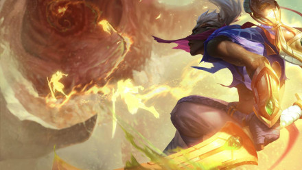

远古巫灵-泽拉斯
英雄简介：
泽拉斯是古代恕瑞玛的巫师，飞升以后的他变成了一种奥术能量体，在魔法石棺的碎片之中涌动。数千年来，他被囚禁在沙漠之下，但最近恕瑞玛的崛起却将他从远古的牢笼中解放出来。对权力的疯狂渴求驱使着他，想要夺回他认为属于自己的东西，并取代世界上这些自命不凡的文明，让自己成为唯一受膜拜的偶像，统一整个世界。技能介绍：
被动技能：法力澎湃泽拉斯的普通攻击可以周期性地回复30-195(基于英雄等级)法力值，这个效果在攻击敌方英雄时会翻倍。
Q:奥能脉冲 第一段施放：泽拉斯开始为奥能脉冲充能，逐渐降低他的移动速度，同时提升此技能的施法距离。第二段施放：泽拉斯发射奥能脉冲，对一条直线上的所有敌人造成80/120/160/200/240(+0.75AP)魔法伤害。在泽拉斯为奥能脉冲充能时，他不能攻击或者施放其它技能。如果泽拉斯在持续时间里没有将奥能脉冲发射出去，那么就会返还一半的法力消耗。
W:毁灭之眼 泽拉斯引爆目标区域的奥术能量，对区域内的所有敌人造成60/90/120/150/180(+0.6AP)魔法伤害，并使他们减速25%，持续2.5秒。区域中心的敌人会受到额外66.7%的魔法伤害，并被减速60/65/70/75/80%。这个减速效果会急速衰减。
E:冲击法球 泽拉斯发射一束原生法球。被命中的第一个敌人会受到80/110/140/170/200(+0.45AP)魔法伤害，并会被晕眩0.5到2秒。晕眩时长和法球飞行的距离成正比。
R:奥术仪式 泽拉斯飞升为他的真实形态，固定在原地，并获得3/4/5发奥术弹幕，射击后弹幕延迟8秒。奥术弹幕可以对命中的所有敌人造成200/250/300（+0.45AP）魔法伤害。一旦满足以下条件之一，固定效果就会结束：10秒的有效期结束；所有奥术弹幕发射完毕；下达移动指令将此效果手动撤销。如果一发奥术弹幕都没有发射出去，那么会返还一半的冷却时间。
英雄台词：
| 要我吃掉他们 | 浪潮逆转了 |
| 沉到海底去吧 | 我要给他们演示一下什么叫海葬 |
皮肤原画：
 使用技巧：
想要玩好泽拉斯对技能命中率要求非常高，因为他的四个技能都是非指向性技能，一般我在使用的时候，若是对线阶段，先使用W进行减速，之后Q技能基本必中。E技能使用可以在和敌方英雄间隔一个快死的小兵时，在小兵马上死亡之前出E，减少对手反应时间。打团时利用手长优势，先用Q技能POKE，如果对面有奶妈、死歌、娜美这种腿短还是脆皮的英雄，后期只要出现在视野里就可以用R技能轻轻松松收获300G。
潮汐海灵-菲兹
英雄简介：
菲兹是一名水陆两栖的约德尔人，生活在比尔吉沃特周围的群礁之间。他会经常把迷信的船长们抛进海中的什一税捡起来物归原主。不过即使是最粗鲁的水手也知道不要招惹他，因为这里流传着的各种教训，都是因为低估了这个小鬼。经常有人误会他的行为只是海洋精灵的任性举动，而事实上他可以号令来自深渊的巨型猛兽，而且不管是盟友还是敌人他都喜欢捉弄。技能介绍：
被动技能：菲兹的灵巧身手能使他在移动时忽略单位的碰撞体积，并且减免来自所有来源的伤害4 （+0.01AP）点（伤害减免最大值为50%）。
Q:淘气打击 菲兹穿过他的目标，同时造成1物理伤害加上10/25/40/55/70（+0.55AP）魔法伤害。这个技能会施加攻击特效。
 W:海石三叉戟 被动：菲兹的普攻会使敌人流血，同时在3秒里持续造成20/30/40/50/60（+0.4AP）魔法伤害。主动：菲兹的下次普攻造成40/50/60/70/80（+0.35AP）额外魔法伤害。如果目标已流血至少2秒，那么这个额外伤害会提升至60/90/120/150/180（+1AP）。若击杀了一个单位，将返还冷却时间和20/28/36/44/52的法力值。
W:海石三叉戟 被动：菲兹的普攻会使敌人流血，同时在3秒里持续造成20/30/40/50/60（+0.4AP）魔法伤害。主动：菲兹的下次普攻造成40/50/60/70/80（+0.35AP）额外魔法伤害。如果目标已流血至少2秒，那么这个额外伤害会提升至60/90/120/150/180（+1AP）。若击杀了一个单位，将返还冷却时间和20/28/36/44/52的法力值。
E:古灵/精怪 菲兹跳到长矛上，朝着你的指针方向进行移动，并且无法被选定，随后会猛击地面，对周围的敌人造成70/120/170/220/270（+0.75AP）点魔法伤害，并减少他们 40/45/50/55/60% 的速度，持续2秒。当菲兹在长矛上时，重新激活此技能会让菲兹再次朝着你的指针方向跳跃，并对小范围内的敌人造成70/120/170/220/270（+0.75AP）点魔法伤害，而不会猛击地面。
R:巨鲨强袭 菲兹放出一条小鱼来附身到它命中的第一个敌方英雄身上，同时减速该英雄，提供真实视野并吸引一条鲨鱼。在2秒后，鲨鱼会破土而出，击飞目标并震开目标附近的其它敌人，减速2秒。小鱼在附身前的移动距离越远，则它吸引的鲨鱼就越大，同时造成到魔法伤害和40%、60%或80%的减速效果。小鲨鱼伤害：150/250/350（+0.8AP）中鲨鱼伤害：225/325/425（+1AP）大鲨鱼伤害：300/400/500（+1.2AP）
英雄台词：
| 顺其自然 | 魔法的魅力只属于我一个人 |
| 我永恒不灭 | 到时候就没什么可以控制我了 |
皮肤原画：
 使用技巧：
前三级猥琐吃兵，最好在三级时将兵线控在己方一塔下，找到机会后WQ连招追着对方A，等对方交出闪现或位移技能后再使用E打伤害。六级之后可以通过QR连招减少对手反应时间。菲兹的E技能是神技，到后期做出中娅沙漏并且CD叠起来之后，可以利用E进行位移或躲避关键伤害，利用QW和平A打伤害，同时可以利用中娅沙漏的间隔多释放一次E技能。
时间刺客-艾克
英雄简介：
艾克是一名来自祖安不良街区的奇才。他可以操纵时间，从而让任何处境都变得对自己有利。通过使用他自己的发明——Z型驱动——他可以对现实的其它分支的可能性进行探索。在不断试验多维或然率的同时，艾克还将他的时间花费在与祖安的其他走失儿童一起撒野上。尽管他酷爱这种自由自在，但只要他的朋友们遇到了威胁，他就会不顾一切地去保护他们。对于毫不知情的观测者来说，艾克总是在一次又一次且轻而易举地完成着不可能的事情。技能介绍：
被动技能：艾克的Z型驱动会让他的技能和普攻充盈着时光能量。第三次命中将会造成30-140(0.8AP)(于1-18级)额外魔法伤害，如果目标是一名英雄，那么艾克自己会获得50/60/70/80%的移动加速效果，持续2/2.5/3秒。对野怪造成150%伤害。
Q:时间卷曲器 艾克扔出一个设备，对沿途的敌人造成60/75/90/105/120(+0.3AP)魔法伤害。 它会在命中第一个敌方英雄后扩展为一个减速场，使场内的一切东西减速32/39/46/53/60%。然后它会在短暂的延迟后返回到艾克手上，返回途中会对所有命中的敌人造成40/65/90/115/140(+0.6AP)魔法伤害。
W:时光交错 被动：艾克的普攻会对生命值低于30%的敌人造成额外魔法伤害，伤害值相当于目标已损失生命值的3%(+0.018%AP)(对小兵和野怪的最大伤害：400)。主动：在3秒延迟后，艾克在目标区域制造一个暂时的时间场，并让进入它的敌人减速40%。如果艾克进入这个时间场，那么他会引爆它，获得一层持续2秒的护盾，护盾最多可吸收80/100/120/140/160(+1.5AP)伤害。在爆炸范围内的敌人会被晕眩2.25秒。
E:相位俯冲 艾克朝着目标方向位移一段距离。他的下次攻击将造成50/75/100/125/150(+0.4AP)魔法伤害，并让他传送到他的攻击目标旁。
R:时空断裂 艾克回到过去的时间点上，暂时免疫伤害且无法被选取。他传送回4秒前所在的地方，并在到达后对附近的所有敌人造成150/300/450(+1.5AP)魔法伤害。此外，艾克会治疗自身100/150/200(+0.6AP)生命值，且最近4秒里每损失1%生命值就会提升3%治疗效果。
英雄台词：
| 我本可以打的轻一点 | 让我再重复一次 |
| 时间不站在你那边 | 欢迎来到祖安 |
皮肤原画：
 使用技巧：
出门装选择腐败药水，召唤师技能可以带闪现传送或者闪现点燃，一级学Q技能，主Q副E，前期不断推线掌控线权，可以压制对面中单进行野区支援，利用TP回家出装备进行装备压制。在四级之后可找机会QEA打出被动利用移速拉扯，同时TP也可更好的支援上下路。